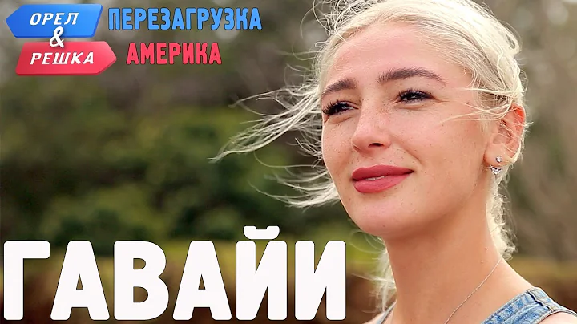
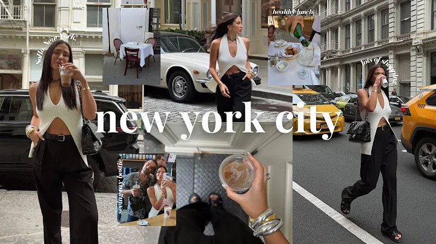
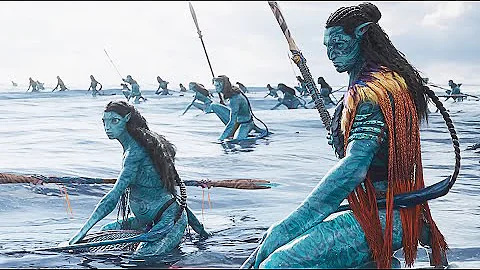
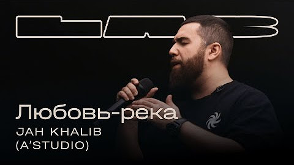
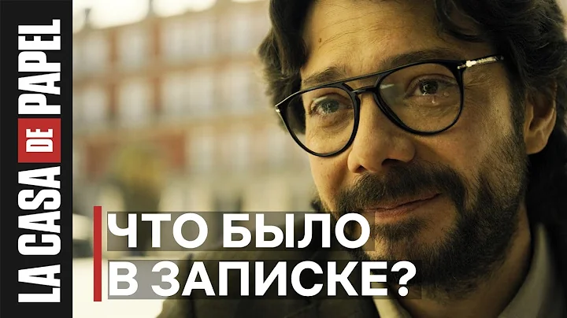
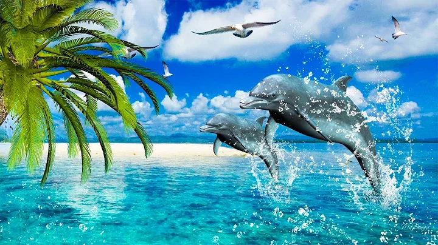
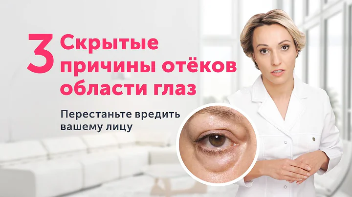
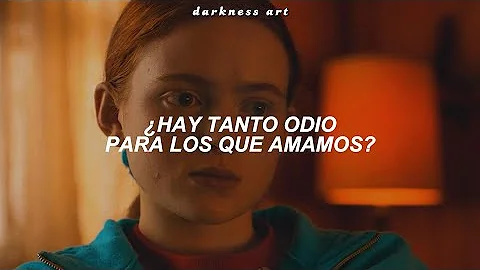

52:49

15:50
A day in NYC ♡ lots of shopping, healthy lunch, exploring SoHo, influencer event & more!
21 тис. переглядів · 4 дні тому

1:37

52:49
Мікс – Jah Khalib, Therr Maitz 一 Любовь-река (A’Studio) / LAB c Антоном Беляевым
14 млн переглядів · 4 роки тому

10:30

52:49
Лечебная Музыка для Снятия Стресса, Усталости, Депресии, Негатива, Детокс негативных эмоций #4
Дивляться: 1 тис. · 4 роки тому

52:49
ОТЁКИ И МЕШКИ под глазами: НЕОЖИДАННЫЕ причины и одно полезное упражнение
2 млн переглядів · 8 місяців тому

52:49
Kate Bush - Running Up That Hill (Subtitulado en español) Stranger Things 4 (4x04)
3,3 млн переглядів · 1 місяць тому